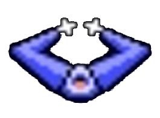
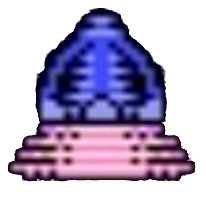
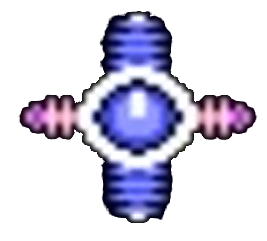
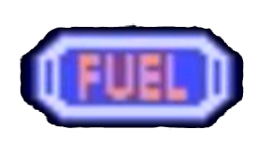
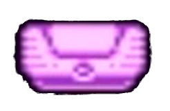
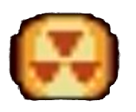
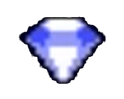

SuojailpiEsine antaa suojauksen mikä vähentää aluksen kunto- ja polttoainemittaria, jos alus törmää planeettaan, viholliseen tai ammukseen. Suojaus tullaan laittamaan päälle painamalla alaspäin suuntanuolta. Uudestaan painallus ottaa suojan pois päältä. |
 |
|---|---|
Turboahdettu moottoriEsine antaa moottoriin turbotoiminnon. Kun esineen on saannut, painamalla rakettitoimintoa ja valinta-painiketta yhtä aikaa turbotoiminto käynnistyy. |
 |
SuunnistinEsine mahdollistaa pelissä kartan, joka näyttää lähiympäristön rakenteen siitä kohtaa, jossa pelaaja sijaitsee |
 |
PolttoainePelin jokaisessa kentässä pitää tietty määrä näitä kerätä, jotta pääse seuraavalle planeetalle |
 |
|---|
SäilötSäilöt sisältävät eri arvoisia esineitä, jotka antavat rahaa ostoksia varten |
 |
|---|---|
RadioaktiivisetRadioaktiivisia aineita, jotka antavat 750 rahayksikköä ostoksia varten |
 |
TimantitAntavat elämän, kun 10 on kerätty sekä yksittäiset antavat 500 rahayksikköä ostoksia varten. |
 |
|---|